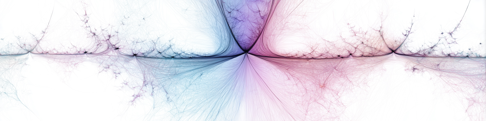
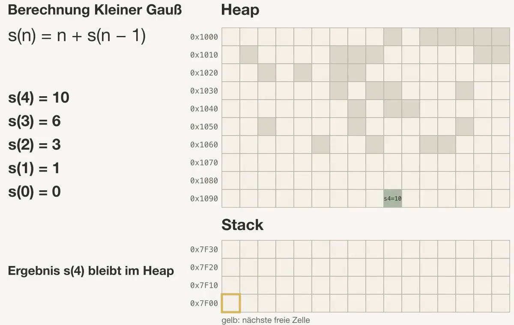
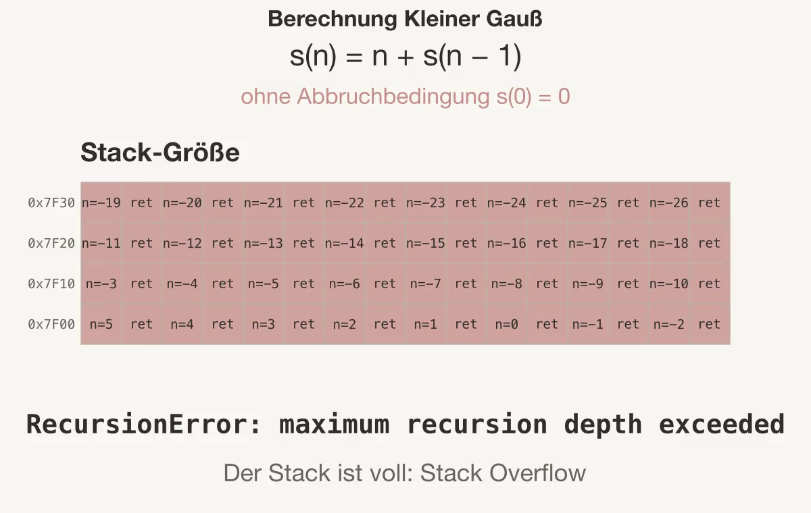

def factorial(x):
if x <= 1: # Basisfall
return 1
return x * factorial(x - 1) # Rekursiver Fall
factorial(5)120Joern Ploennigs · AI4SC

History repeats itself, first as tragedy, second as farce.
— Karl Marx
Rekursion ist keine Python-Besonderheit — sie ist eine Lösungsstrategie für Probleme, die sich in kleinere Probleme desselben Typs zerlegen lassen. In der Bauplanung und Umweltinformatik begegnen uns solche hierarchischen Strukturen ständig: BIM-Modelle mit Gebäude, Stockwerken, Räumen und Elementen; geographische Gebiete in Quadtrees; Tragwerkshierarchien. Rekursion ist die natürliche Werkzeugwahl für diese Probleme.
Rekursion folgt dem Divide-and-Conquer-Prinzip: das Problem wird in kleinere Teilprobleme gleicher Art zerlegt, bis ein direkt lösbares Kleinstproblem erreicht ist — der Basisfall. → S09a Algorithmen behandelt Divide-and-Conquer als allgemeine Algorithmenstrategie; Rekursion ist deren eleganteste Implementierung in Code.
Das Grundmuster jeder rekursiven Funktion sieht so aus:
Das Standardbeispiel einer rekursiven Funktion ist die Fakultät. Es dient hier nur als minimale Einführung in die Python-Syntax — die ingenieurspraktischen Beispiele sind das Kernthema dieser Session.
120Ebenso wichtig: Endlosrekursion vermeiden. Wenn der Basisfall nie erreicht wird, wächst die Aufrufkette unbegrenzt und führt zum Absturz.
Was dabei im Speicher passiert, zeigen die beiden Abschnitte zu Stack und Heap weiter unten; den Call Stack kennen wir aus 06a_Funktionen.
Stack und Heap sind kein Python-Feature, sondern zwei Bereiche im RAM, die das Betriebssystem jedem laufenden Programm zuweist. Der Stack (Stapel) arbeitet nach dem LIFO-Prinzip (Last In, First Out): Bei jedem Funktionsaufruf kommt ein neuer Rahmen mit den lokalen Variablen obenauf, bei der Rückkehr wird er wieder entfernt. Seine Größe ist begrenzt, typischerweise einige Megabyte. Der Heap ist ein größerer, dynamisch wachsender Bereich für Daten, die länger leben als ein einzelner Funktionsaufruf, etwa Listen oder Objekte. Den Call Stack mit seinen Frames kennen wir aus 06a_Funktionen; die Rekursion zeigt, wie er bei vielen verschachtelten Aufrufen wächst.

Jeder Funktionsaufruf belegt auf dem Stack die nächsten freien Zellen für Argumente und Rücksprungadresse. Bei der Rekursion ruft sich eine Funktion selbst auf, etwa die Summe s(n) = n + s(n − 1) mit der Abbruchbedingung s(0) = 0. Fehlt die Abbruchbedingung oder ist die Rekursionstiefe sehr groß, füllt sich der Stack Rahmen für Rahmen, bis keine Zelle mehr frei ist. Das Programm bricht dann ab (Stack Overflow), und Python meldet einen RecursionError.

Gebäudemodelle (BIM) sind von Natur aus hierarchisch aufgebaut: ein Gebäude enthält Stockwerke, Stockwerke enthalten Räume, Räume enthalten Elemente. Dieselbe Traversierungslogik gilt auf jeder Ebene — ein klassisches rekursives Muster. Eine KI generiert den Code; die Aufgabe der Studierenden ist es, Basisfall und rekursiven Schritt zu verstehen und zu verifizieren.
Eine KI-generierte Funktion zur Traversierung sieht so aus — zu lesen und zu verifizieren, nicht blind zu übernehmen:
def bim_traversiere(element, tiefe=0):
"""KI-generiert: Traversiert ein BIM-Modell rekursiv."""
print(" " * tiefe + element["name"])
for kind in element.get("kinder", []): # Basisfall implizit: leere Liste
bim_traversiere(kind, tiefe + 1)
gebaeude = {
"name": "Gebäude A",
"kinder": [
{"name": "Stockwerk 1", "kinder": [
{"name": "Raum 101", "kinder": [
{"name": "Tür", "kinder": []},
{"name": "Fenster", "kinder": []}
]},
{"name": "Raum 102", "kinder": []}
]},
{"name": "Stockwerk 2", "kinder": [
{"name": "Raum 201", "kinder": []}
]}
]
}
bim_traversiere(gebaeude)Gebäude A
Stockwerk 1
Raum 101
Tür
Fenster
Raum 102
Stockwerk 2
Raum 201Ein weiteres klassisches Beispiel für Rekursion in der Umweltinformatik ist der Quadtree: ein geografisches Gebiet wird rekursiv in vier gleich große Quadranten unterteilt, solange sich mehr als ein Messpunkt darin befindet. Damit lassen sich Geländedaten, Sensornetze oder GIS-Abfragen effizient strukturieren.
def quadtree_unterteile(grenzen, punkte, max_tiefe=4, tiefe=0):
"""Divide-and-Conquer: Unterteilt ein Gebiet rekursiv."""
xmin, ymin, xmax, ymax = grenzen
if tiefe >= max_tiefe or len(punkte) <= 1: # Basisfall
return {"grenzen": grenzen, "punkte": punkte}
mx = (xmin + xmax) / 2
my = (ymin + ymax) / 2
quadranten = [
((xmin, ymin, mx, my), [p for p in punkte if p[0] <= mx and p[1] <= my]),
((mx, ymin, xmax, my), [p for p in punkte if p[0] > mx and p[1] <= my]),
((xmin, my, mx, ymax), [p for p in punkte if p[0] <= mx and p[1] > my ]),
((mx, my, xmax, ymax), [p for p in punkte if p[0] > mx and p[1] > my ]),
]
return [quadtree_unterteile(b, pts, max_tiefe, tiefe + 1) for b, pts in quadranten]Rekursion und Iteration sind gleichwertig ausdrucksstark — jede Schleife kann als Rekursion formuliert werden und umgekehrt. Die Wahl hängt von der Problemstruktur und den Rahmenbedingungen ab.